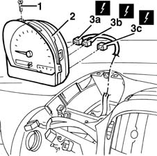

5560B10 analogue control panel - r+r
- Path
- Procedures > 55 ELECTRICAL EQUIPMENT > 5560 INSTRUMENTS > 5560B analogue control panel > 5560B10 analogue control panel - r+r
- Kind
- repair procedure (removal / refitting; the operation number is the code)
- Applies to
- all engines; all production periods
- Interactive page
- https://sloeber94.github.io/elrnDB-fMltpl/en/#/2891960
Applies to: all engines; all production periods
 Removing
Removing
 Refitting
Refitting2125C24 gear lever knob - r + r
7065C10 air conditioning control panel - r+r
7040A11 control panel lid - r + r
1. Undo the bolt.
2. Move the instrument panel slightly.
3. Disconnect the electrical connections (3a, 3b, 3c).
 | Name | Connector |
|---|---|---|
3a | Instrument panel |
| Name | Connector |
|---|---|---|
3b | Instrument panel |
| Name | Connector |
|---|---|---|
3c | Instrument panel |

Applies to: all engines; all production periods
Refitting
RemovingCheck that the instrument panel is not damaged.
If the instrument panel is replaced, renew any bridges at the rear so that they are identical to the ones for the panel removed (see "Descriptions and Operation").
Connect the electrical connections.
Refit the instrument panel and fix it using the bolt.
Check the operation of the instrument and the functions controlled by it.
7065C10 air conditioning control panel - r+r
Topics linked from this page (6)
- 2125C24 gear lever knob - r + r
- 7040A11 control panel lid - r + r
- 7065C10 air conditioning control panel - r+r
- E050A Instrument panel ( FACIA )
- E050B Instrument panel ( FACIA )
- E050C Instrument panel ( FACIA )
Topics that link to this page (49)
- K03 SPEEDOMETER NOT WORKING
- K05 MILOMETER NOT WORKING
- K15 CLOCK NOT WORKING
- K20 FUEL LEVEL GAUGE NOT WORKING
- K21 FUEL RESERVE WARNING LIGHT NOT WORKING
- K26 ENGINE COOLANT OVERHEATING WARNING LIGHT NOT WORKING
- K30 MINIMUM ENGINE OIL PRESSURE WARNING LIGHT NOT WORKING
- K40 BATTERY CHARGING WARNING LIGHT NOT WORKING
- K45 HEATER PLUGS WARNING LIGHT NOT WORKING
- K53 I.E. FAILURE WARNING LIGHT OFF / (DO NOT CARRY OUT INITIAL TEST)
- K55 CODE FAILURE WARNING LIGHT OFF / (DO NOT CARRY OUT INITIAL TEST)
- K60 ABS FAILURE WARNING LIGHT ON
- K61 ABS WARNING LIGHT OFF / (DO NOT CARRY OUT INITIAL TEST)
- K80 AIRBAG FAILURE WARNING LIGHT ON
- K81 AIRBAG WARNING LIGHT OFF / (DO NOT CARRY OUT INITIAL TEST)
- K82 PASSENGER AIR BAG DISABLED WARNING LIGHT
- K90 INSTRUMENT LIGHTS / NOT WORKING
- 2125C14 gear hand-lever mount bracket (one)- r r
- 2125C16 gear hand-lever - r r
- 2125C28 gear control lever - r r
- 2125C30 gear engagement cable - r r
- 5010B24 under-facia air ducts r r
- 5010C30 central air outlet on fascia - r+r
- 5010D18 top mixed air temperature sensor - r+r following electrical wiring check with heater case removed
- 5020A10 heater box - r+r
- 5020A50 heater radiator - r+r
- 5020B10 heater control support - r+r
- 5020B38 air distribution flap control cable - r+r
- 5020B42 air mixer flap control cable - r+r
- 5020B80 heater system wiring bundle - r r or replace
- 5040B30 expansion valve (tube orifice) - r+r
- 5040B64 sensor on evaporator for a/c ecu - r + r
- 5040C10 air conditioner box - r+r
- 5040C50 air conditioner heater radiator - r+r
- 5040C64 a/c evaporator - r+r
- 5040C10 air conditioner control support - r+r
- 5040C38 air distribution flap control cable - r+r with control support removed
- 5040C40 air mixer flap control cable - r + r
- 5040C52 air inlet and recirculation flap actuator - r r
- 5040C90 air conditioner system wiring bundle - r r
- 5040D77 air conditioner mixer flap control motor - r r
- 5505C31 under-facia wiring - r r
- 5505C41 cabin wiring - r r
- 5540C18 headlamp/light cluster alignment correction motor switch - r+r
- 5580C80 airbag system wiring bundle - r r or replace
- 5580M80 on-board navigator system wiring harness - r r
- 5580M84 navigation system mount junction unit - r r
- 7040A04 facia lower trim-r r
- 7040A25 central facia trim - r r